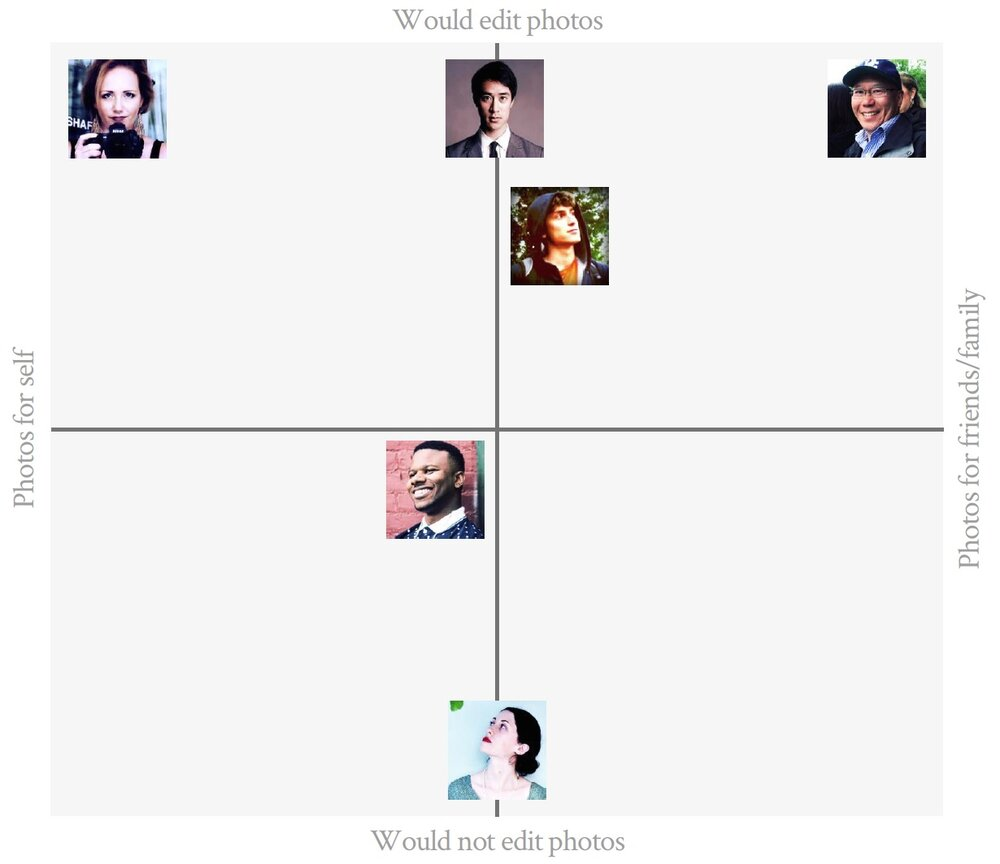
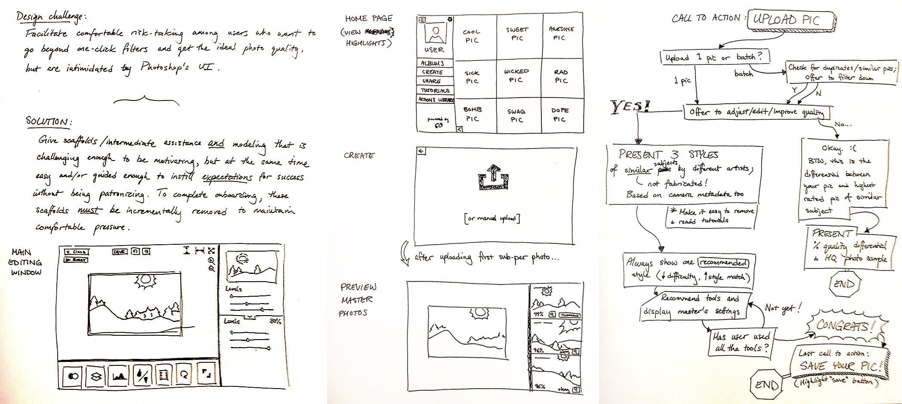
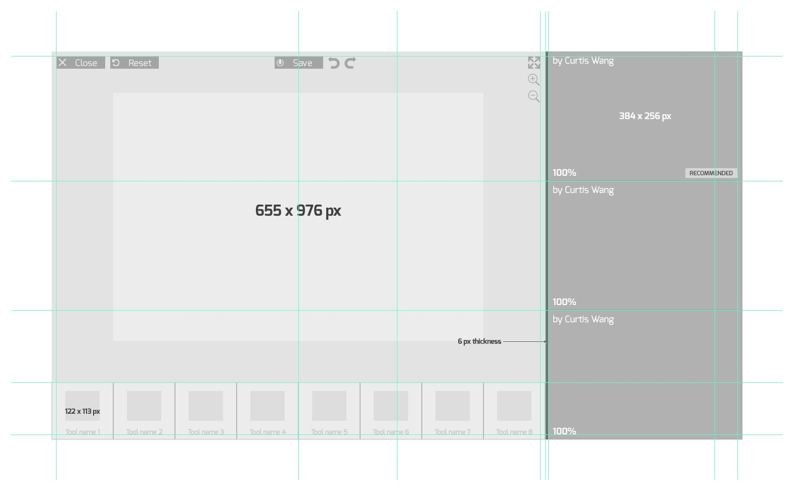
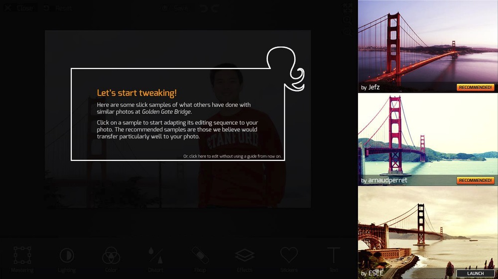
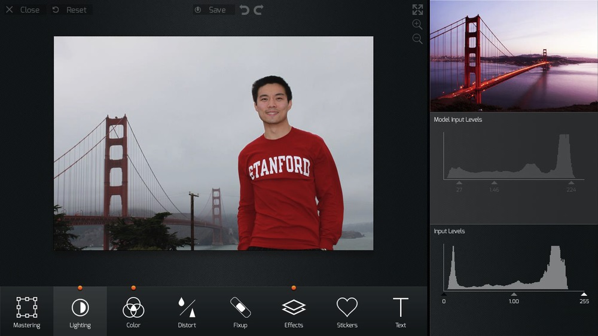
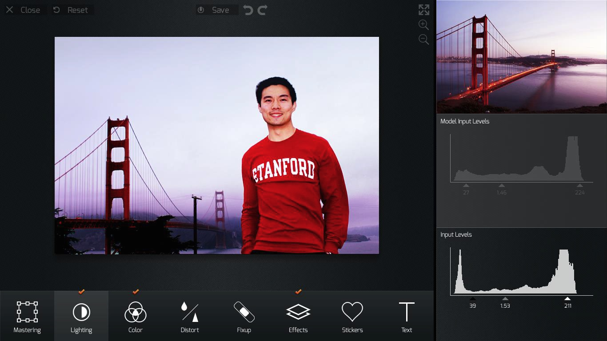

Camo: Photo Editing Coach
An AI-powered photo editing app targeting the "DIY Perfectionist" — someone with creative ambition but intimidated by professional tools like Photoshop. Camo's coach analyzes a user's raw photo against professional references and suggests editing ranges rather than exact values, preserving creative agency while systematically building fluency. UI elements were deliberately designed to parallel Photoshop's interface patterns to reduce the re-learning cost when users eventually graduate to professional software.
Problem & Learner Context
Amateur photographers face a persistent skills gap between the blunt simplicity of single-swipe filters and the overwhelming complexity of professional editing suites like Photoshop. Users who want greater creative control are too often intimidated by Photoshop's vast interface to ever develop genuine fluency — leaving them stranded between tools that are either too simple or too complex.
User research surfaced a recurring persona: the "DIY Perfectionist" — someone who feels a strong sense of creative ownership over their photos and insists on being in control of the editing process, but whose intimidation by complex tools actively stifles mastery. This tension drove several core design questions:
- How might we make photo-editing welcoming to use and to learn from?
- How might we give the DIY Perfectionist the confidence and mastery to produce "flawless" photos?
- How might we get photo-editing software to anticipate the DIY Perfectionist's vision for "flawlessness"?
- How might we remove the sense of intimidation from the tool in one's pursuit of mastery?
User interviews also revealed how personal and varied photography is as a practice. One user explained that she takes only 1–3 photos per day, each one intentional:
"I don't want a photo of me in a museum, but me in the museum with a cup of coffee. Or an afternoon in Paris. Or a book. I look forward to showing my pictures to my family, but I'm only uploading my pictures to capture a bigger experience — then the raw process needs to be self-explanatory." — Anabel
Another user took up to hundreds of photos a day, dedicating blocks of time to curate and sequence them into a visual narrative. Despite these differences in style, both users shared the same frustration: the tools available to them did not match their creative ambitions.

2×2 user persona map — plotting research participants across editing intent and audience axes to isolate the target "DIY Perfectionist" quadrant
My Design Decisions & Rationale
The defining design principle for Camo was to keep the intelligent coach in a supporting role — not as an instructor dictating a prescribed sequence of steps and exact adjustment values, which would strip the user of the very sense of control they most needed. Conventional interactive tutorials tend to guarantee a successful output at the cost of the user's creative agency. Camo's approach inverts this: the system offers multiple guided pathways and adjustment ranges, not targets, so the user retains creative judgment at every step.
This distinction between process-driven and product-driven design was central to format selection. The app format — an interactive tool the user actively controls — was the only viable vehicle for this philosophy. A static PDF, a video walkthrough, or a one-way tutorial would have replicated the same prescriptive dynamic Camo was designed to break.
Interface design choices were also deliberate: since Camo is intended as an intermediate tool before users graduate to Photoshop, many UI elements — workspace layout, visual indicators, panel organization — were designed to parallel those of professional-grade software. This reduces the cognitive re-learning cost when users eventually make the transition.


Design ideation spread — challenge framing, homepage layout sketch, and the full AI coaching decision-tree flow (left); digital wireframe of the editing workspace with reference panel, histogram comparisons, and Photoshop-parallel tool palette (right)
Project Walkthrough & Highlights
Camo's core feature is an AI analysis engine that compares the user's raw image against a professionally edited reference photo and generates multiple guided editing pathways from which the user can choose. Rather than prescribing exact adjustment values, the system offers recommended ranges — preserving the user's creative latitude while ensuring the outcome stays within professional standards.

Reference selection — Camo surfaces professionally-edited versions of the user's same scene, tagged by photographer and scored by recommendation strength
Comparative visual feedback reinforces the learning loop: tools like histograms and light-distribution graphs display both the raw and reference images side by side, allowing the user to see their edits concretely and with interpretive depth. This encourages thoughtful emulation rather than copy-cat replication, sustaining the user's engagement as a growing editor rather than a passive follower of instructions.


The editing loop — raw photo against the reference baseline (left) and after Lighting adjustments are applied (right), with the image shifting toward the warmer reference tone as histogram gaps narrow
Proposed Evaluation Framework
Because Camo was developed as an academic research prototype, it was not deployed to a live production environment for long-term data collection. Instead, its success is anchored in a rigorous, evidence-based evaluation framework designed to empirically measure structural learning progression and the systematic degradation of scaffolding in complex creative interfaces.
1. Core Evaluation Criteria & "Scaffold Fading"
A common shortcoming of interactive instructional interventions is the permanence of support—the tools rarely provide a pathway for the learner to graduate into independent execution. Camo’s evaluation blueprint relies on a systematic, bit-by-bit fading of the AI coach's prompting. True mastery is operationalized through two primary behavioral metrics during this fading phase:
- Strategic Tool Selection vs. Regressive Backtracking: Learners are expected to reach for the correct professional adjustment tools with increasing precision. A reduction in UI backtracking serves as an indicator that the user is arriving at a desired visual outcome through premeditated strategic decision-making, rather than ignorant trial and error.
- Execution Speed Stability: As visual overlays and range recommendations are incrementally removed, the framework tracks user editing and export speed. Maintaining a stable execution velocity during scaffold removal indicates that the interface's conceptual models have been successfully internalized by the user.
2. Methodological Tensions & Critical Counterpoints
An honest critique of this evaluation architecture reveals distinct operational and philosophical tensions that a formal study must account for. Rather than treating these factors as unaddressed blind spots, the framework actively incorporates them into the research design:
The Paradox of Creative Serendipity
In creative software engineering, trial and error is a fundamental component of the artistic process.
The framework risks over-indexing on efficiency, potentially eliminating the "happy accidents" that
drive stylistic discovery.
Mitigation: The evaluation criteria must explicitly distinguish between
intentional experimentation (purposeful testing of aesthetic boundaries) and ignorant
manipulation (blind slider tweaking due to a lack of tool fluency). Camo’s metrics
prioritize the reduction of the latter while preserving interface latitude for the former.
The Friction of "Desirable Difficulties"
Expecting execution speed to remain entirely linear or stable during scaffold removal ignores basic
cognitive load theory. Removing instructional support naturally introduces a temporary performance
dip as the learner's brain takes over the heavy lifting.
Mitigation: A drop-off in editing speed should not be flatly categorized as a
learning failure; instead, it can indicate a "desirable difficulty" where the user slows down to
deliberately engage with advanced editing nuances. Data collection models must pair telemetry logs
with qualitative think-aloud protocols to map user intent directly to interface actions, ensuring
the system does not mistake a deliberate, slower pace for a lack of mastery.